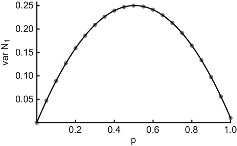

Phys. Rev. E 89: 012812, 2014

Abstract
We introduce an analytic model for directed Watts-Strogatz small-world graphs and deduce an algebraic expression of its defining adjacency matrix. The latter is then used to calculate the small-world digraph's asymmetry index and clustering coefficient in an analytically exact fashion, valid non-asymptotically for all graph sizes. The proposed approach is general, and can be applied to all algebraically well-defined graph-theoretical measures, thus allowing for an analytical investigation of finite-sized small-world graphs.
Supplementary Information and Material
A note on the relation between the Watts-Strogatz model and $\mathfrak{G}_{SW}$
The original Watts-Strogatz model starts from an undirected, not self-looped ring graph, and rewires with probability $q$ all of its edges. This model is equivalent to constructing a "reduced" ring-graph with $2kN_N - q 2 k N_N (N_N-2k-1)/(N_N-1)$ edges uniform randomly distributed across the $2 k N_N$ edges of the ring-graph, and distributing uniform randomly the remaining $q 2 k N_N (N_N-2k-1)/(N_N-1)$ edges outside $\mathfrak{G}_{RG}$. The $\mathfrak{G}_{SW}$ model introduced in our study uses this latter constructive approach, utilizing probabilities for placing edges in the corresponding regions of the full graph (see equations (19) and (20) in the paper). In this respect, both the Watts-Strogatz model and $\mathfrak{G}_{SW}$ are identical in the ensemble limit. Note that in any one realization of $\mathfrak{G}_{SW}$, the total number of edges may differ; however, in the ensemble limit, $\mathfrak{G}_{SW}$ and the Watts-Strogatz model yield the same graph properties. Even testing networks with only 20 nodes over many realizations (upwards of a few hundred), no significant differences were observed between the two models.
We note that, for a finite number of realizations, any slight difference between these two procedures will vanish when constructing $\mathfrak{G}_{SW}$ using probabilities, but by forcing a fixed number of wired edges, just as in the Watts-Strogatz model. However, we have abstained from such an implementation, as such an additional constraint complicates the algebraic approach.
A note on the extension of the proposed approach to higher-order moments
In this study, we did not yet consider the calculation of higher-order moments, such as the variance, of specific graph-theoretical measures. However, such an extension should in principle be possible within our non-asymptotic framework.
In a slightly different but related context, we considered the number $\mathcal{N}_k$ of walks of length $k$ in a classical not self-looped Erdős-Rényi digraph $\mathfrak{G}_{ER}$. $\mathcal{N}_k$ is an algebraically well-defined quantity, with $\mathcal{N}_1$ being equivalent to the graph's total adjacency $A$, and $\mathcal{N}_3$ counting the number of walks of length 3 (of which the closed walks contributing to the clustering coefficient constitute a subset).
Preliminary work along these lines shows that the calculation of the second-order moment of a higher-order graph-theoretical measure requires either the exchange of a sum and product in order to apply the rules (9) and (15) in our paper, or an extension of the algebra considered here. Such an extension is currently under investigation as part of a future contribution.
Considering the variance of a first-order measure such as $\mathcal{N}_1$, the calculations lead already to a non-trivial form. The result is visualized in Fig. 1, which shows the numerical variance of $\mathcal{N}_1$ (grey dots) as function of the connectedness $p$ and its analytic form (black solid) $$ \text{var } \mathcal{N}_1 = \frac{1}{N_N^2} \sum\limits_{i,j=1}^{N_N} \left( a_{ij} - \mathcal{N}_1 \right)^2 = \frac{1}{N_N^2} \, p \big( p - N_N (p-1) \big) (N_N-1) $$ for 100 realizations of a random graph of 100 nodes. As $A^{SW}$ (equation (23) in the paper) is independent of the rewiring probability $q$, the above equation provides the correct variance of the total adjacency for $\mathfrak{G}_{SW}$, with $p=2k/(N_N-1)$. From this, one can see that $\text{var } A^{SW} \rightarrow 0$ for $N_N \rightarrow \infty$ and $k$ finite. Please note that, by definition, $\text{var } \mathcal{N}_1$ does not vanish at $p=1$ because $a_{ij}=0$ for all $i=j$.
|  | Figure 1: Variance of the number of walks of length 1 (equivalent to the total adjacency $A$) as function of the connectedness $p$ of a classical not self-looped Erdős-Rényi digraph $\mathfrak{G}_{ER}$. The Mathematica code snippet used for this evaluation can be found below. |
Mathematica
A simple Mathematica code snippet which numerically evaluates $\text{var } \mathcal{N}_1$ for $\mathfrak{G}_{ER}$ can be found here.